Projets
-
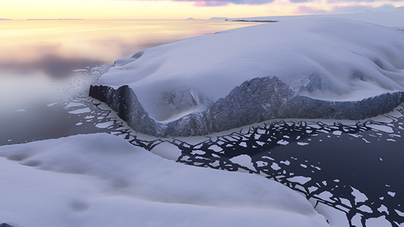
décembre 2024 - janvier 2025
Rendu procédural dynamique de blocs de glace
Pour Microsoft Flight Simulator 2024 (Asobo Studio). Utilisation de cellules de Voronoï et d'un bruit de Perlin pour générer des blocs de glace le long des rivages gelés, dont la taille, l'aspect et l'écartement est déterminée par les conditions météorologiques. Implémentation de l'algorithme de Fortune pour calculer des cellules de Voronoï, après un tirage aléatoire des sites qui favorise une plus grande variété de tailles de cellule. Réalisé en C++ et en HLSL.
-
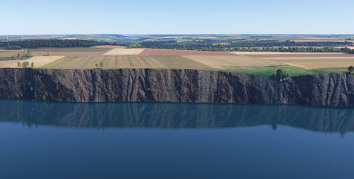
mars 2024 - décembre 2024
Affichage d'un terrain sans popping
Pour Microsoft Flight Simulator 2024 (Asobo Studio). Génération des meshes du terrain à la volée sur GPU à partir des textures d'altitude et du calcul de la courbature de la Terre. Blending entre lods en prenant en compte la vitesse de l'avion pour obtenir un équilibre entre qualité du rendu et discrétion de la transition. Interpolation anisotropique de l'altitude et tesselation pour améliorer les falaises maritimes. Réalisé en C++ et HLSL avec D3D12.
-
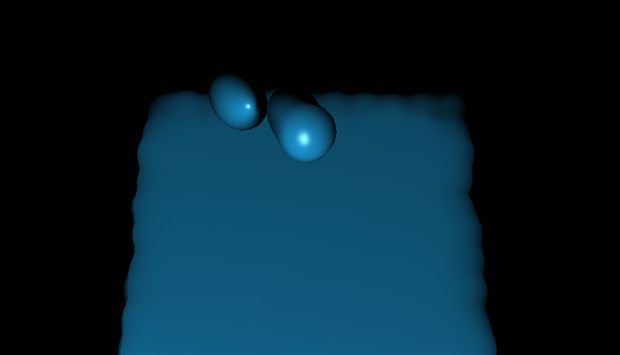
janvier 2024 - février 2024

Rendu d'une hydrodynamique des particules lissées
Projet de rendu de master 2. Implémentation de "Fast, High-Quality Rendering of Liquids Generated Using Large-scale SPH Simulation" (X. Xiao, S. Zhang et X. Yang, 2018). Utilisation d'un mix entre une fonction de densité et une analyse en composantes principales (PCA). L'objectif était d'obtenir un résultat lisse pour les surfaces étendues, sans compromettre le rendu des gouttelettes individuelles. Réalisé en C++ et GLSL, avec GLFW et GLM.
-
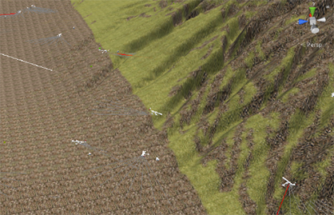
septembre 2023 - novembre 2023
Compétition génétique et sculpture d'un terrain
Projet d'informatique graphique de master 2. Réalisation d'outils de sculpture de terrain (extrusion, creusement, lissage, aplanissement), implémentation de cinématique inverse et d'une IA avec une évolution génétique (compétition entre des proies et des prédateurs). Réalisé en C# sur Unity.
-
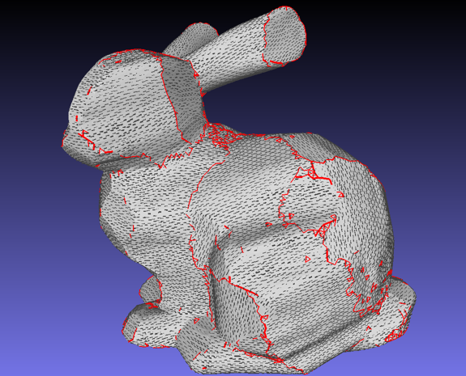
mars 2023 - août 2023
Approximation d'un maillage 3D par des surfaces réglées
Stage de recherche au sein de l'Université de Cardiff. En utilisant des coordonnées de Plücker pour représenter des droites tangentes aux faces du maillage, j'ai défini puis optimisé une fonction de coût pour produire une approximation du maillage par un assemblage de surface réglées. Réalisé en C++ en utilisant OpenMP et IntelMKL.
-
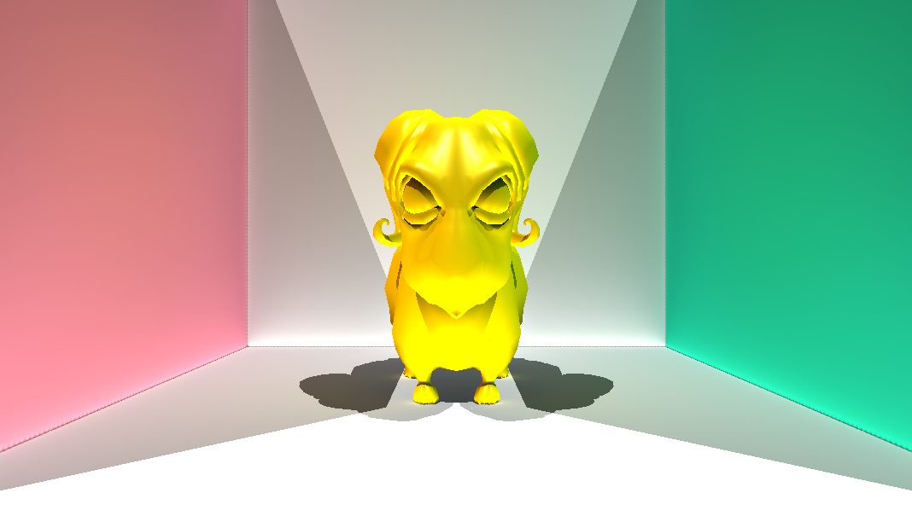
mars 2023
Illumination globale avec des surfels
Projet du cours de rendu de 3e année. Implémentation de “Point-based Global Illumination for Movie Production” de Per H. Christensen (Pixar, 2010). Echantillonage de surfels à partir des triangles des meshs, calcul de leur couleur avec du raytracing, puis création d'une structure d'octree pour les contenir et les agréger avec des harmoniques sphériques. Enfin, utilisation de ces surfels pour obtenir une illumination globale à un rebond. Réalisé en C++, sur CPU.
-
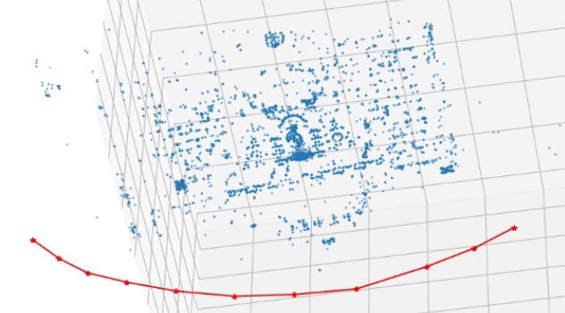
décembre 2022
Structure from motion
Projet du cours de computer vision de 3e année. Reconstruction d'une scène 3D et des différentes positions de la caméra à partir de photographies prises selon différents points de vue et des paramètres intrasèques de la caméra. Calcul des points d'intérêt avec AKAZE, puis association entre les points de différentes photos en utilisant BFMatcher et RANSAC. Réalisé en C++, et en Python pour la visualisation.
-
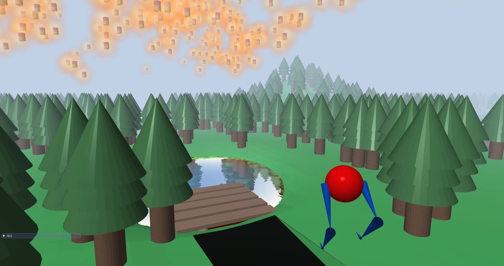
juin 2022
Rendu 3D d'une scène procédurale
Projet du cours d'informatique graphique de 2e année. Réalisation d'une scène 3D générée procéduralement avec l'algorithme Wave Function Collapse, comprenant un avatar controllable animé avec de la cinématique inverse, des lanternes placées selon un bruit de Perlin, des boids, des reflets calculés en temps réels sur les lacs avec effet de profondeur et de vagues, et un effet de brouillard. Codé en C++ et en GLSL, avec OpenGL.
-
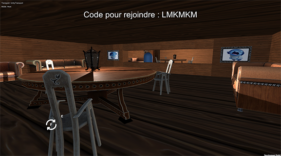
octobre 2021 - avril 2022
Communication non verbale dans les jeux vidéo
Projet scientifique commun de 2e année (groupe de 6 étudiants). Etude de la communication non verbale (regard, expression, gestes, mouvements d'un avatar) dans le domaine du jeu. Réalisation d'un jeu de société, d'un jeu vidéo 2D en multijoueur local, puis d'un jeu vidéo 3D multijoueur utiliant la webcam avec Unity, chacun demandant des échanges d'informations entre les joueurs. Nommé pour le prix du meilleur projet.
-
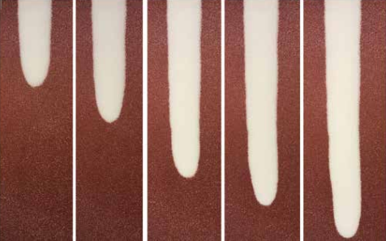
septembre 2021 - décembre 2021
Etude des écoulements granulaires sur un plan incliné
Projet scientifique en laboratoire de mécanique. Etude d'un écoulement granulaire sur une pente constante, et du lien entre diamètre des billes, degré de la pente, vitesse de l'écoulement et hauteur de la couche résiduelle (une fois l'écoulement terminé). Application de Navier-Stokes et du théorème Pi pour en déduire la rhéologie. Etude de la formation de levées.
-
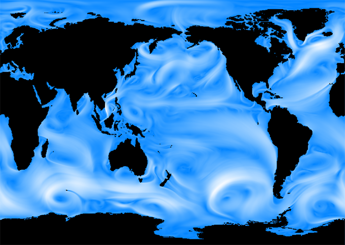
janvier 2019 - février 2020
Simulation de fluides 2D "Stable fluids"
Travail d'initiative personnelle encadré MPSI/MP*. Implémentation de la méthode de simulation "Stable fluids" de Jos Stam (1999), auquel j'ai ajouté une résolution de la pression par une méthode de multi-maillage, ainsi que l'application d'une force de vent et d'une force de Coriolis. Application à des tests simples en temps réel, observation d'allées de Von Karman, et application à une carte du monde pour retrouver les courants de surface. Réalisé en C++.